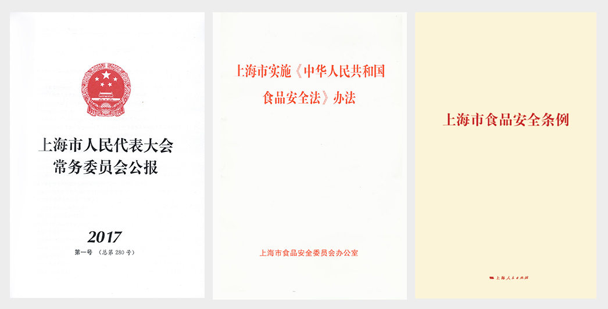

返回查看更多
返回查看更多
以法治思维和法治方式完善并创新食品安全监管体制机制，建立从农田到餐桌全过程最严格的食品安全监管法规，以法治保障构建本市“舌尖上的安全”体系。（版面引言文字）
坚持最严的准入标准，严格落实企业主体责任；坚持最严的要求，严格落实食品安全各方责任；坚持问题导向，着力解决食品安全突出问题。
①上海市人民代表大会常务委员会公报
②2011年，在全国率先颁布了《上海市实施<中华人民共和国食品安全法>办法》
③2017年1月20日，上海市第十四届人民代表大会第五次会议审议《上海市食品安全条例》
从严落实“食品安全是管出来的”
从严落实“食品安全是产出来的”
加强源头治理，严把从田头到餐桌的每一道防线
与创新社会治理相结合，创新“三小”管理模式
加强网络食品经营新业态管理
从严处罚食品安全违法行为
落实最严肃的问责
返回查看更多